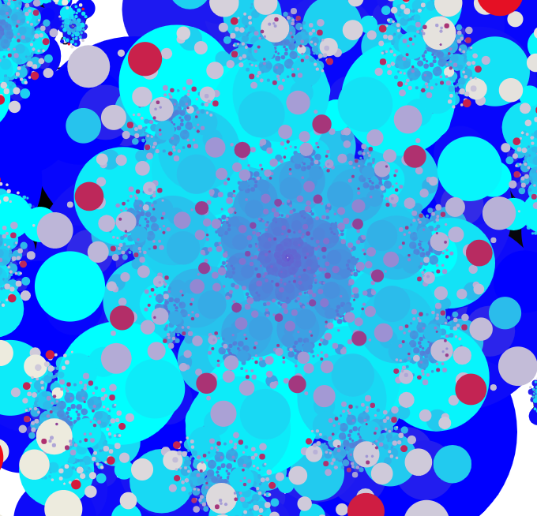
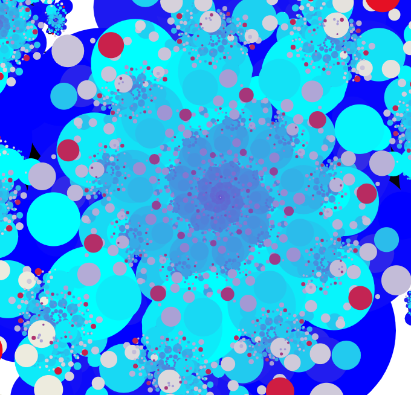
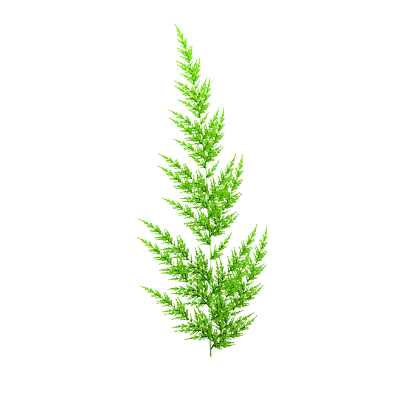
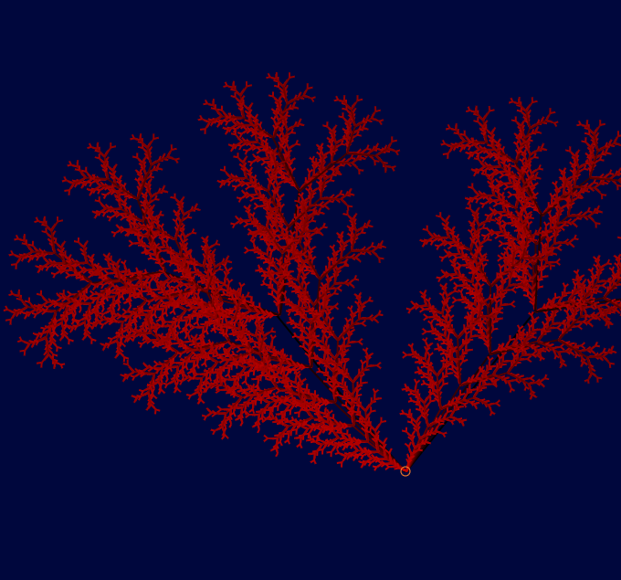
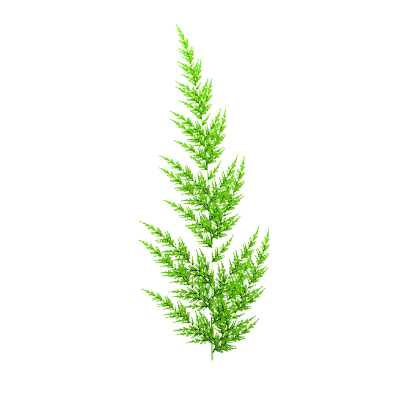
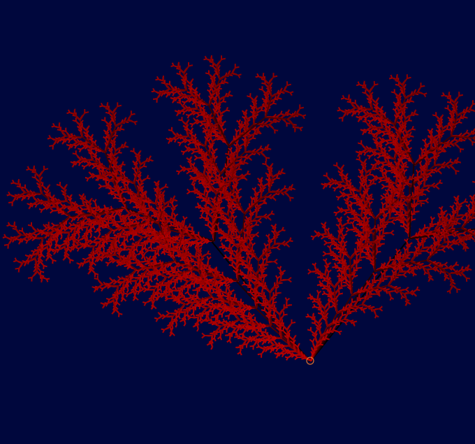
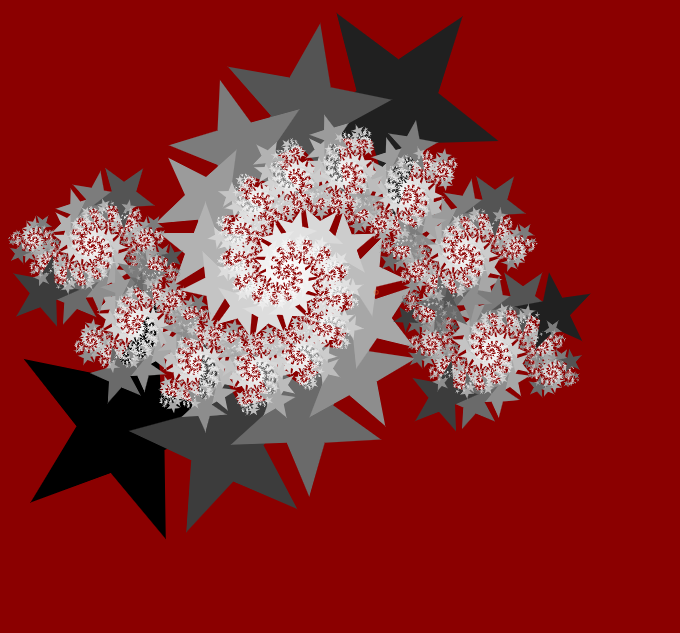
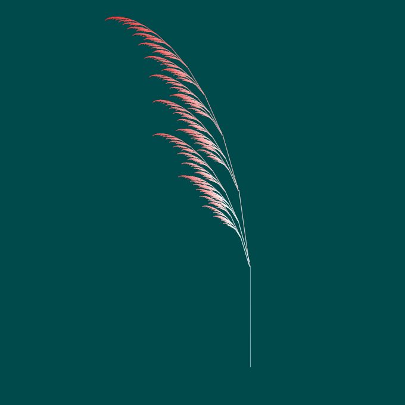
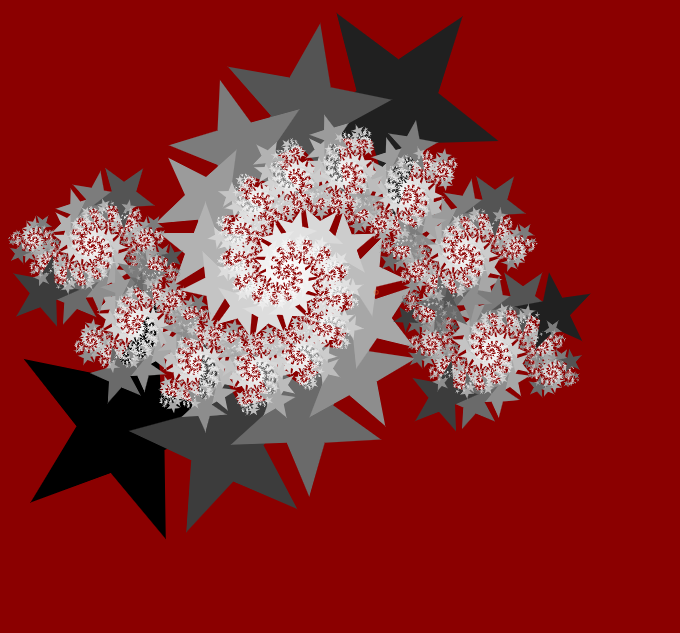
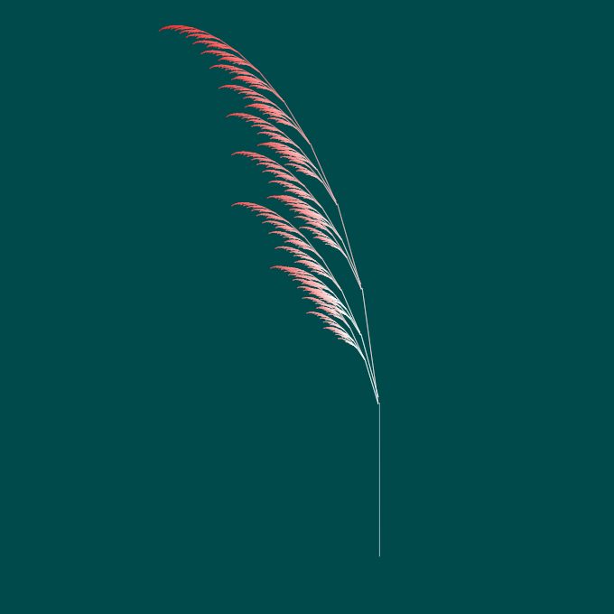

What are fractals?
Fractals are mathematical objects that display self-similarity. Self-similarity is when small sections of the
object are revealed to be, through close scrutiny, complete copies of the original image! If you look really close, you'll see the same image again and again and again!
Fractals can often be observed in nature as natural processes play themselves out identically at different scales. The
branching of lightning bolts, the dance of flame, even conscious thought; fractals and recursion are everywhere you look.
You don't have to be a mathematician to appreciate the beauty! Try making your own!
 

 




 


